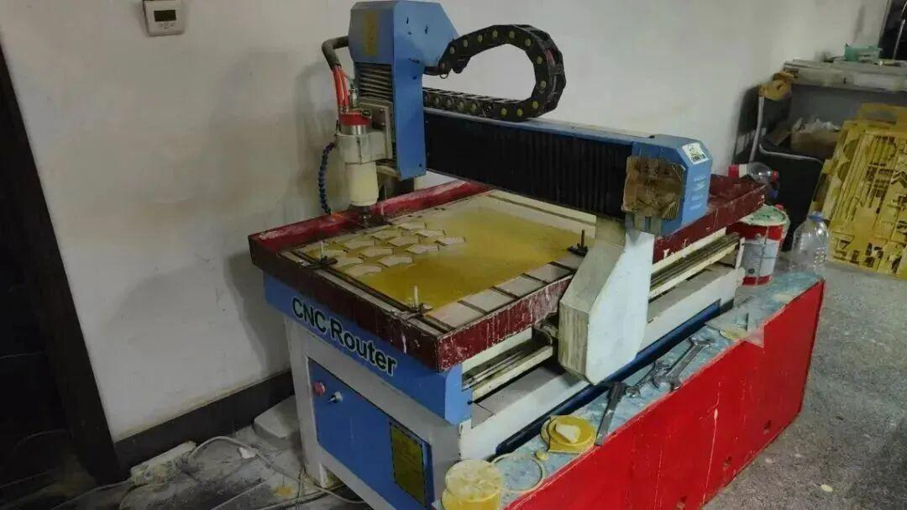
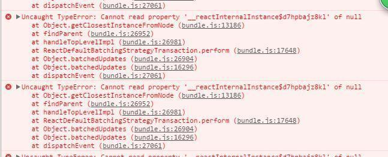

23赛季 | 步兵组专访
步兵机器人体积小、输出高，是所有机器人中最灵活的一个，也是主要的输出单元。
它矫健的身姿可以灵活地规避攻击，并且可以发射17mm弹丸，激活能量机关为全队带来增益，相应的缺点就是血量比较少了。
今年步兵机器人主要实现的是结构的更新与迭代，云台相比于上一代步兵机器人，稳定度、精准度、持续输出能力都有提高。

❂争夺雕铣机
梁俊吉：今年装车的时候最有意思的事情就是各个兵种争夺雕铣机的使用权，有时候去吃饭稍微慢一点雕铣机就被英雄、工程给霸占了。

所以我的办法就是一起去吃饭的时候，吃完第一个跑回来，当然每次都能跑过这些个不常锻炼加上天天熬夜内卷的大老爷们。
❂丢失的螺丝
樊盈盈：步兵非常荣幸的经历了三代人的装配(步兵的荣幸，谢谢各位大哥们)。有些组的机械老是偷我的螺栓（点名英雄），于是每天都会陷入到处寻找东西的状况......
❂新的尝试
林静：整车装出来后，才发现一些设计上的问题，这让人很头疼，本来步兵是单c板控制的，我原先写的也是单c板控制的代码，因为一些不可控因素的影响现在变成双c板控制，我没有用双c板控制过，这对我来说也是一个新的尝试
❂bug!bug!还是bug!

梁顺利：最开心的当然是把代码跑通的时候，整个世界都明亮了。但辛酸的是，大能量机关改了！它改了！又得从头再来。难受，我不能接受。
❂成员有话说
✦希望大家一起努力做好今年的比赛
✦别偷我螺丝，有事找学长(手动狗头)
✦永远全勤，每周挨训
✦学无止境，把自己该做的做好，可能前路漫漫，只管步步向前

END
排版 | 恩嘉
文案 | 恩嘉
图片 | 沈理电协